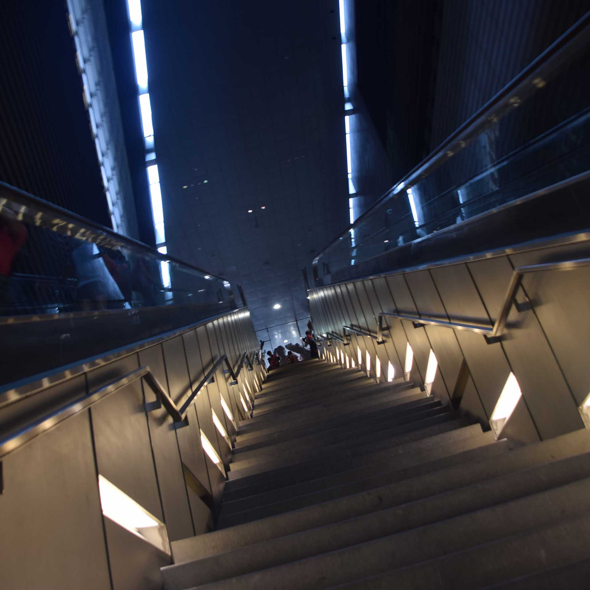
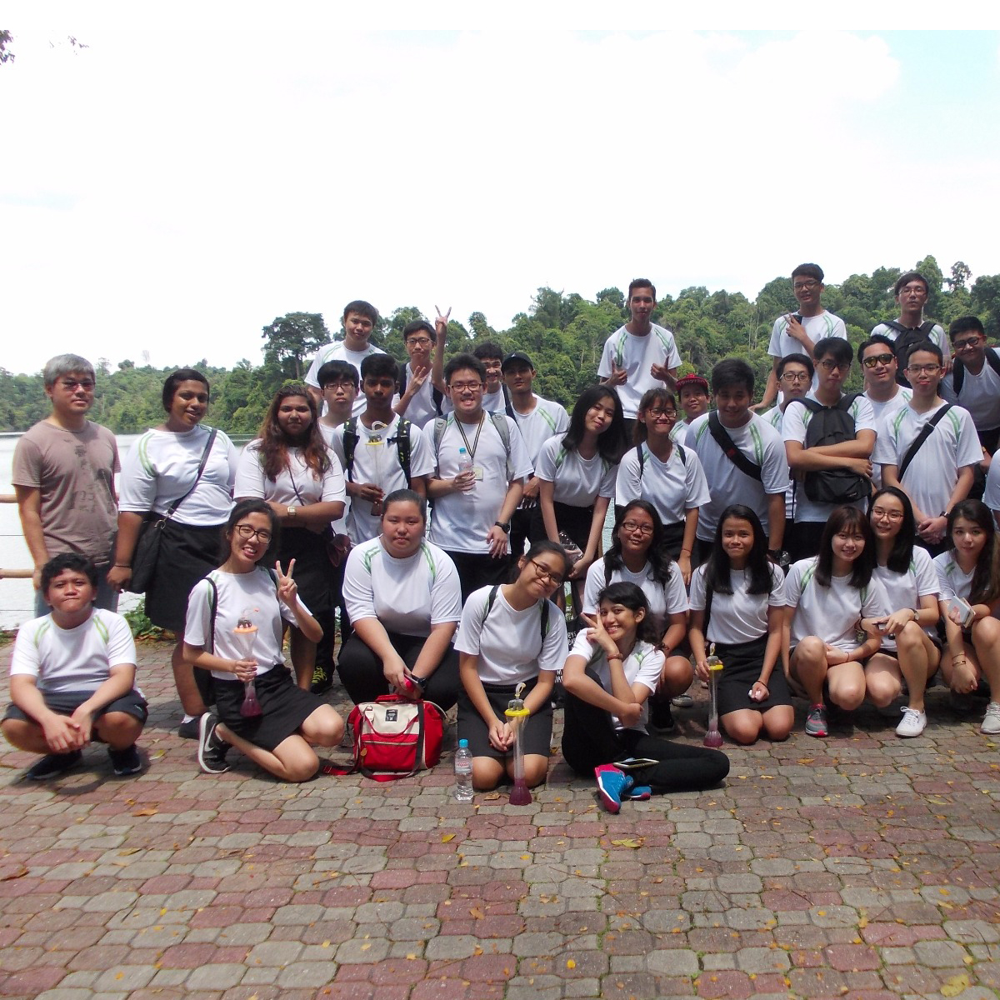

-

2000-Present
My name is shi yong and that I have a interest with technologies.
-

January 2013 - December 2016
I discovered that interest during my secondary school days and learnt to code create webpages. Apart from this, I am interested in taking things apart, so I went to a course that teach me how to fix electrical wiring, reparing refigerators and air conditioners, plumbing.
-

December 2016
With N level result, I procced to go for early admission excerise in ITE, and was accepted before my N levels
-

January 2017
I got the results that hit the requirement and are now working towards the next destination: Polytechnic